A
Claude Code Plugin
適合希望讓 Claude Code 依技能描述自動路由的情境。
/plugin marketplace add kevintsai1202/ai-agent-dev-guide
/plugin install ai-agent-dev-guide@ai-agent-dev-guideLIVE IMPLEMENTATION / WEBMCP
Law Graph 是一個實際部署的法律 AI 網站範例。它把人類使用的網站介面，與外部 Agent 可探索的 WebMCP 工具層放在同一個產品入口，適合用來對照本套件的 WebMCP 邊界、工具註冊與漸進增強設計。
HOW TO READ
先用入口技能判斷問題屬於哪個層次；需要多步驟、型別資料與稽核時看 Embabel，需要動態 UI 時看 json-render；等人類可操作的頁面完成後，再視需求加入 WebMCP。
INSTALL / GET STARTED
這個 repo 提供四個互相連結的技能。可以整套安裝，也可以先安裝入口技能，再依任務加入 Embabel、json-render 或 WebMCP。
適合希望讓 Claude Code 依技能描述自動路由的情境。
/plugin marketplace add kevintsai1202/ai-agent-dev-guide
/plugin install ai-agent-dev-guide@ai-agent-dev-guide適合直接把技能加入偵測到的 Agent，或指定全域安裝。
npx skills add kevintsai1202/ai-agent-dev-guide
npx skills add kevintsai1202/ai-agent-dev-guide --all
npx skills add kevintsai1202/ai-agent-dev-guide --global01 / ROUTER
先理解四個技能的責任邊界、完整建置順序，以及何時不需要 Agent Framework。
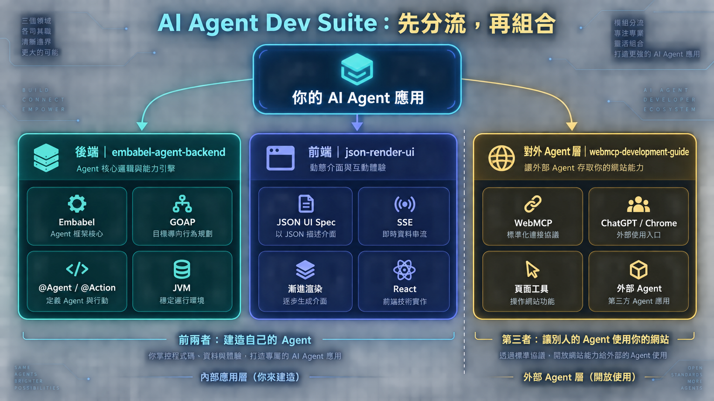
後端建造 Agent，前端呈現動態 UI，WebMCP 讓外部 Agent 使用網站。
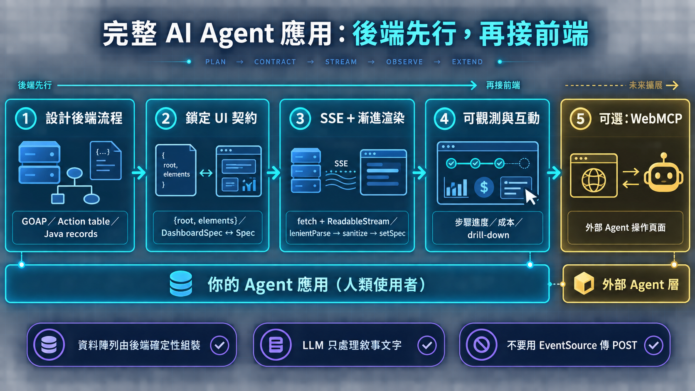
從流程、契約、串流、可觀測性一路走到可選的 WebMCP。
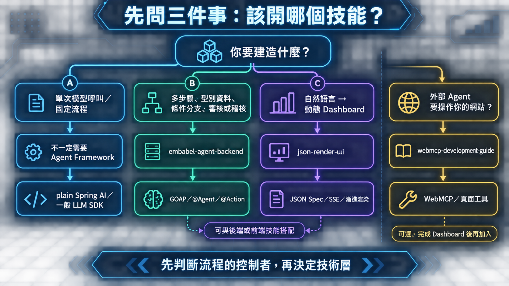
先判斷流程的控制者，再決定要用 plain Spring AI、Embabel、json-render 或 WebMCP。
02 / BACKEND
把業務流程拆成型別化、可重規劃、可測試且可觀測的 JVM Agent。
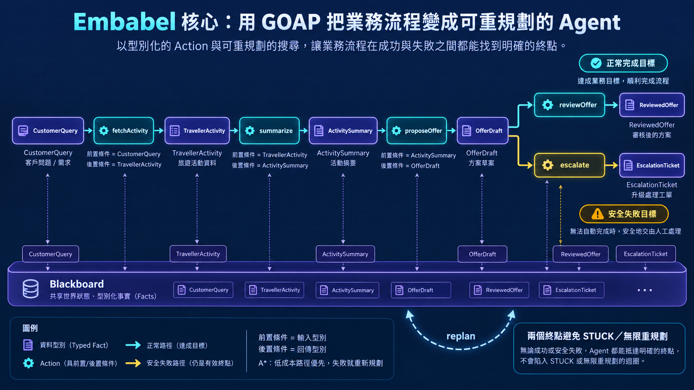
成功路徑失敗時仍有 EscalationTicket，避免 STUCK 或無限重規劃。
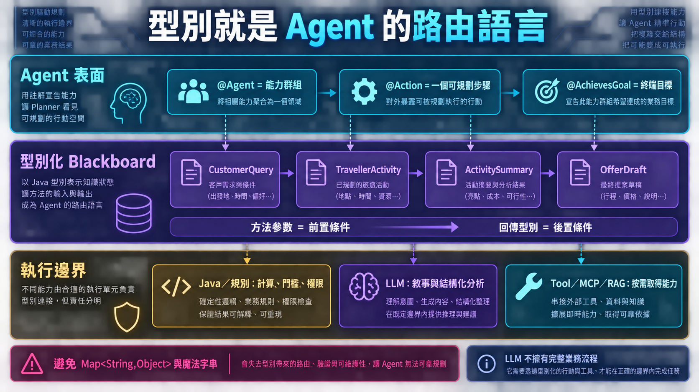
方法參數是前置條件，回傳型別是後置條件；Java、LLM 與工具各守自己的邊界。
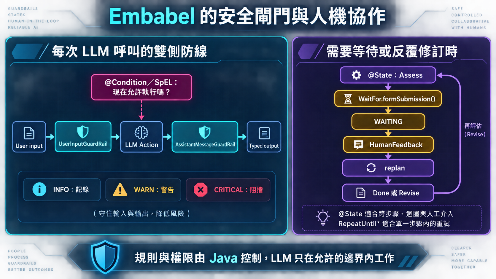
輸入與輸出 Guardrail、@Condition、@State 和 WaitFor 共同控制風險。
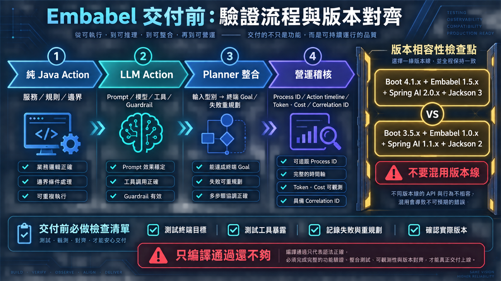
從純 Java Action、LLM Action、Planner 整合到營運稽核，並保持 Boot 與 Embabel 版本線一致。
03 / FRONTEND
將自然語言請求轉成可容錯串流、漸進渲染並能持續探索的動態 Dashboard。
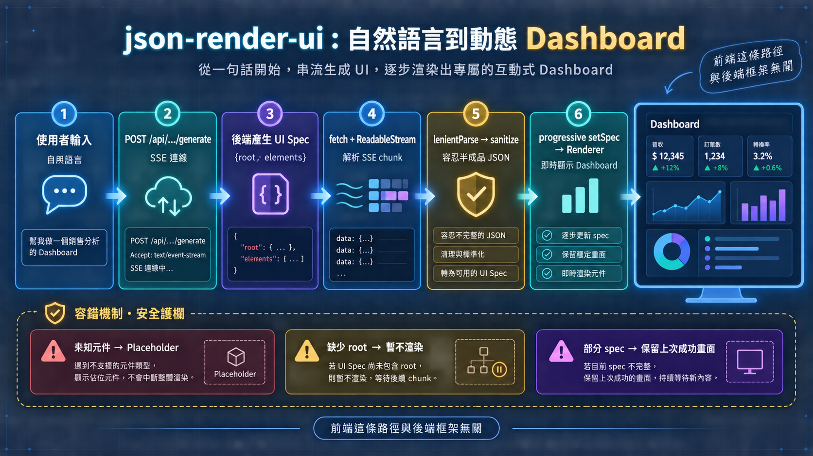
POST、SSE、fetch、lenientParse、sanitize 與 Renderer 串成容錯流程。
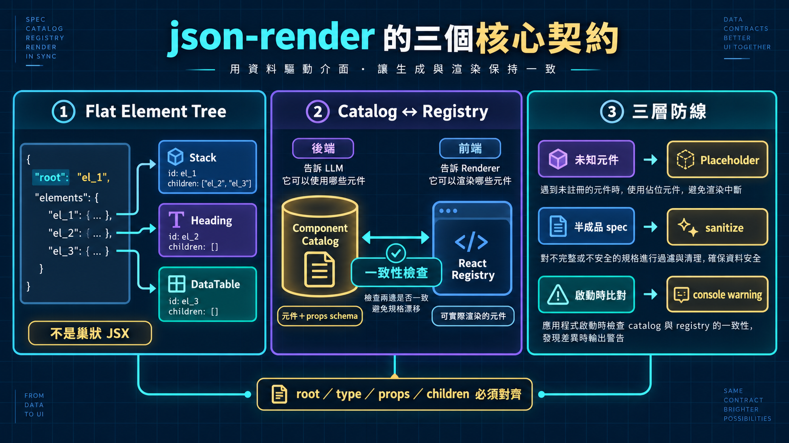
Flat Element Tree、Component Catalog ↔ React Registry，以及三層防線避免規格漂移。
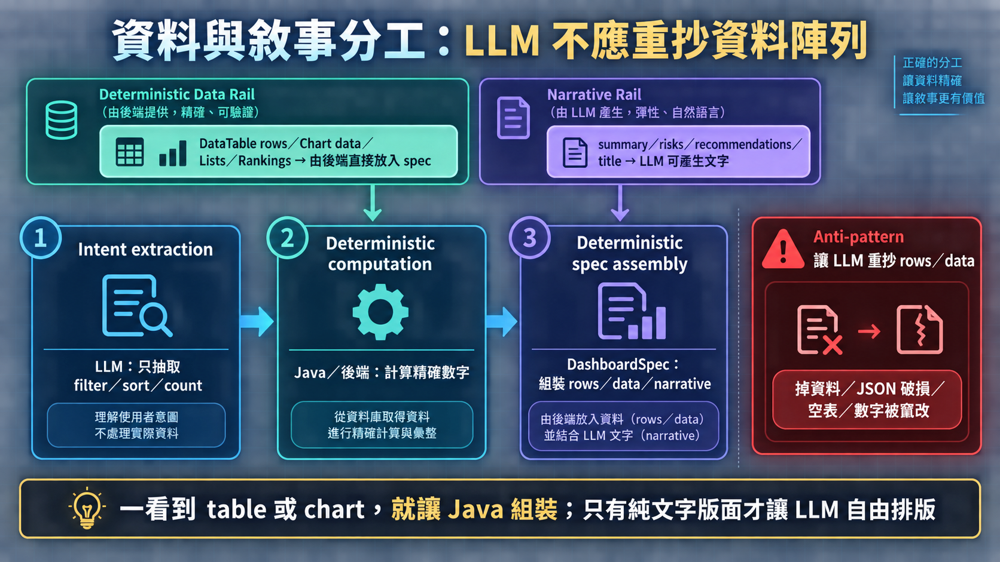
LLM 抽 intent 與敘事；rows、chart data、lists 和 rankings 由後端組裝。
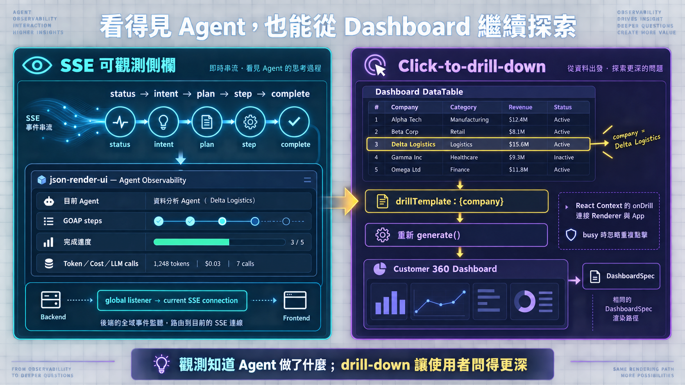
SSE 進度與成本讓 Agent 可見；drillTemplate 讓使用者從表格繼續追問。
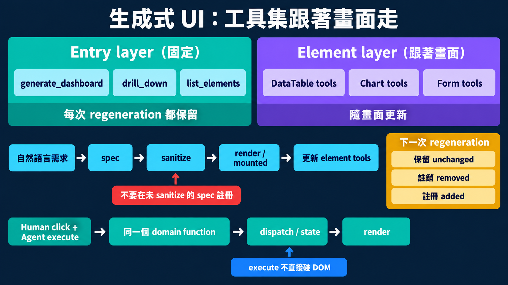
Entry layer 與 Element layer 接上 json-render 的 spec lifecycle，讓工具跟著已驗證的畫面更新。
04 / AGENT-FACING
當人類可操作的頁面完成後，再把頁面能力安全地發佈成外部 Agent 可呼叫的工具。
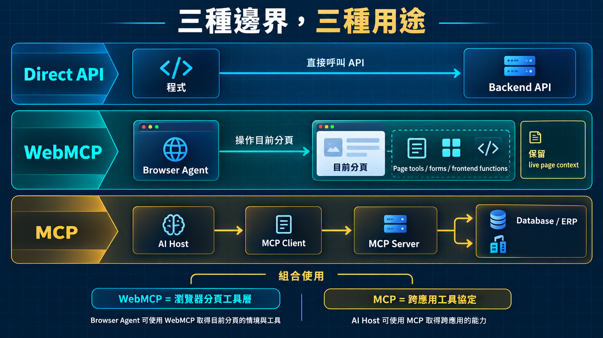
Direct API、WebMCP 與傳統 MCP 的責任不同，先決定誰是工具提供者。
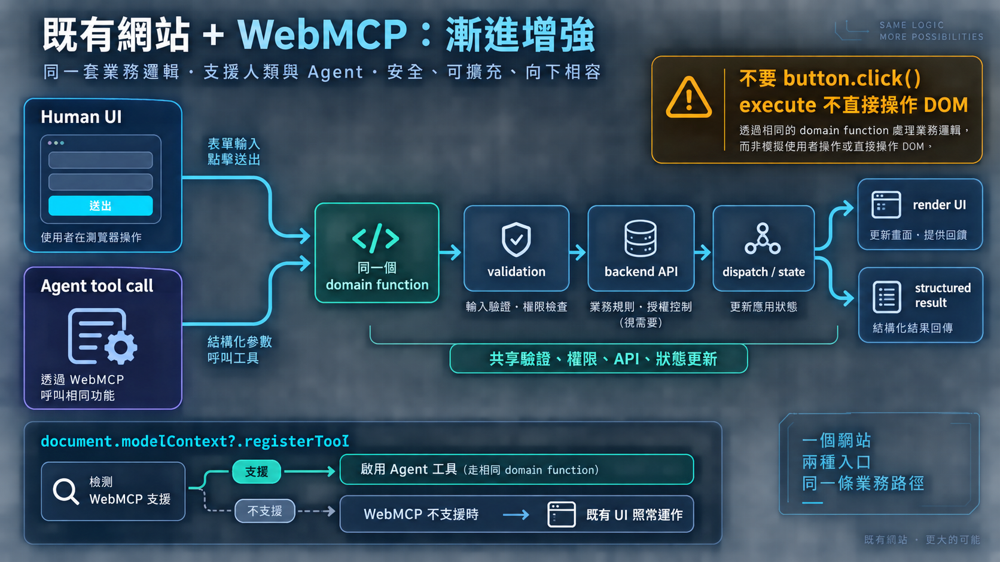
Feature detection、fallback 與同一條 domain function 讓既有網站逐步增強。
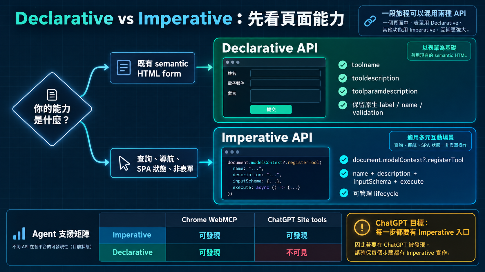
表單語意優先用 Declarative；查詢、導航與 SPA 狀態用 Imperative。
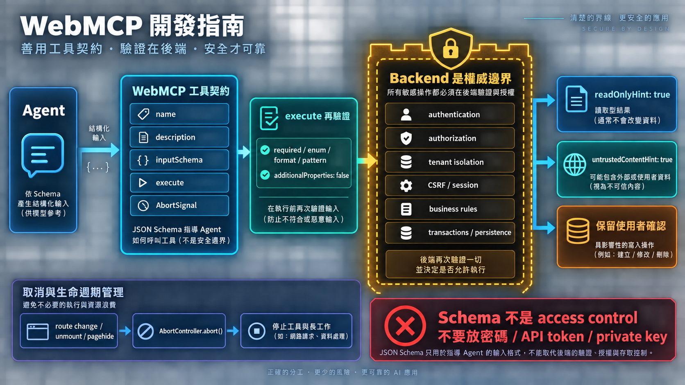
Schema 只是引導；敏感寫入、權限與資料驗證仍由後端和使用者確認負責。
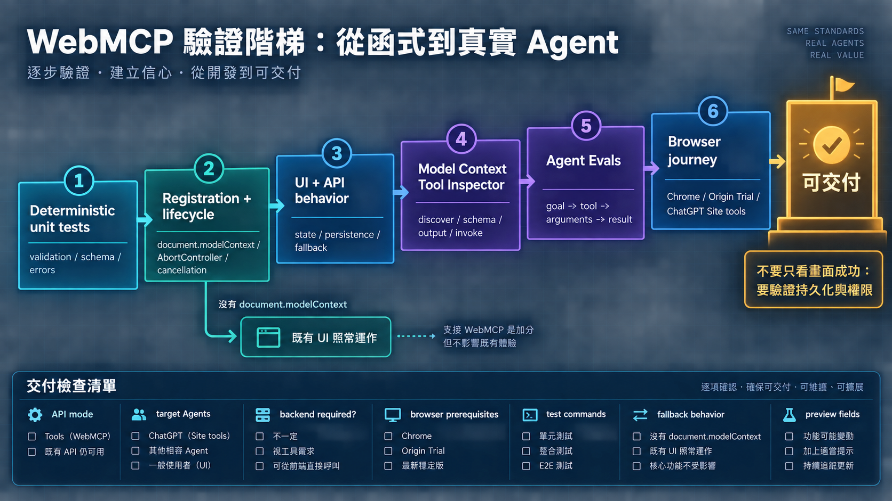
依序驗證註冊生命週期、UI/API、Inspector、Evals 與真實瀏覽器旅程。